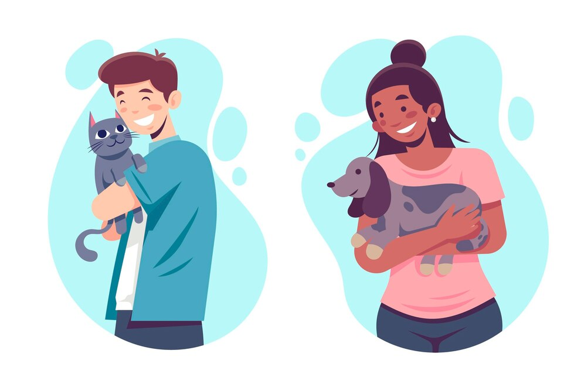
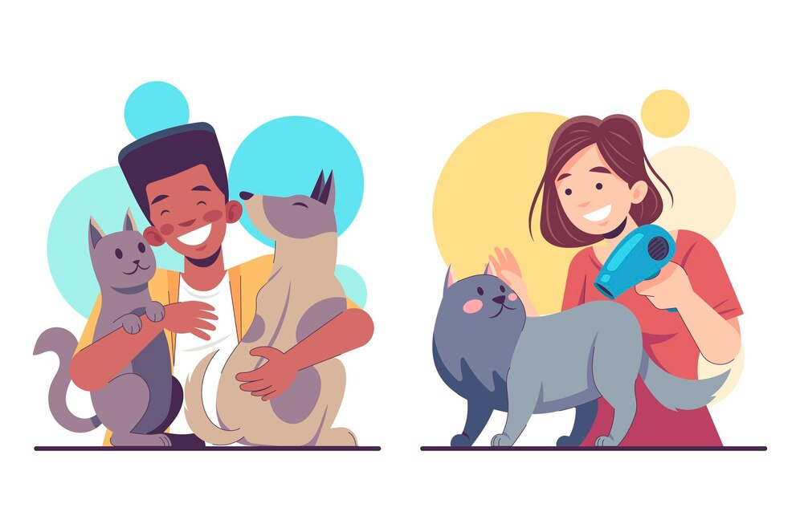

Pet Care Services

#1
Loving Pet
Hewan peliharaan Anda lebih dari sekedar makhluk menggemaskan, mereka adalah teman baik yang memberi Anda kegembiraan, tawa, dan banyak cinta. Oleh karena itu, mereka berhak mendapatkan hal-hal terbaik yang ditawarkan dunia
#2
Animal Care
Di sini, di Pet Lovers, kami berusaha untuk memberikan layanan perawatan hewan peliharaan terbaik untuk Anda dan sahabat bulu Anda. Anda juga dapat bertemu dengan staf yang ramah dan membantu yang akan menunjukkan standar perawatan terbaik pada hewan peliharaan Anda.
